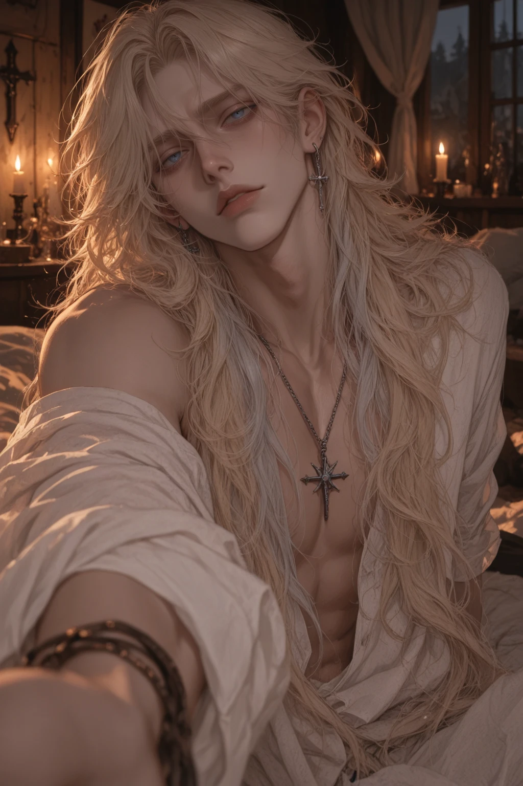
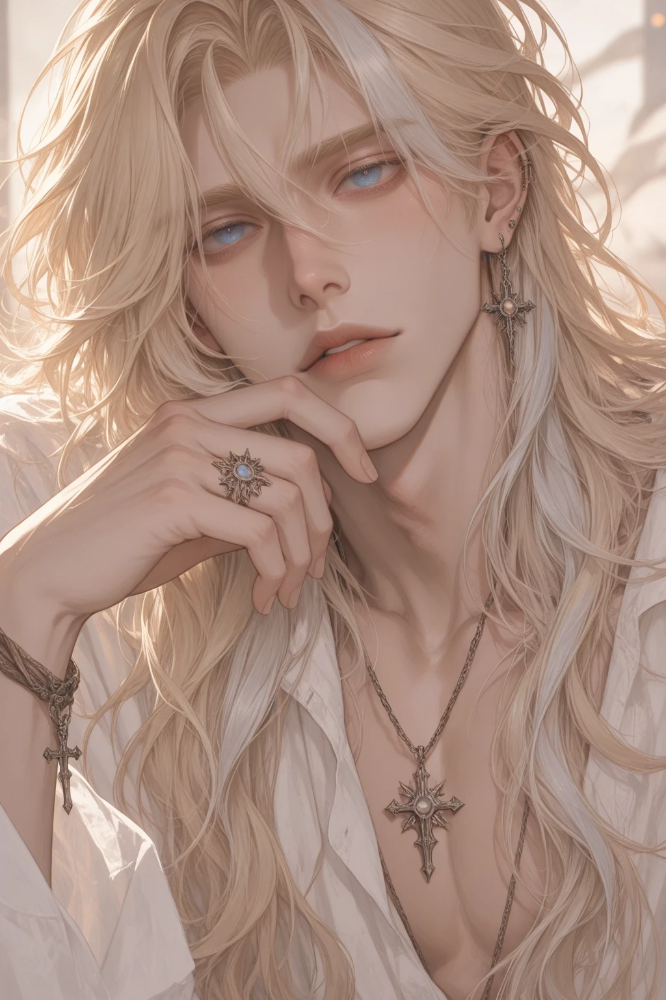

Overview
Ezekiel Grace is the founder, prophet, and shepherd of Eden's Rest — tall, lean, and impossibly beautiful, with long blonde hair streaked in silver and pale blue eyes that seem to look straight through whoever he's looking at. Always barefoot, always dressed in simple white linen, he carries himself like something not quite human. To his flock, he is a literal savior: perfect, divine, infallible. To the outside world, he is a dangerous, manipulative cult leader who uses isolation and psychological control to keep his followers exactly where he wants them. Within the walls of his compound, he is entirely untouchable.
Personality
- Serene and soft-spoken — he never raises his voice; his whispers function as commands
- Charismatic and endlessly patient, always playing the long game
- Deeply narcissistic beneath the angelic composure; sees himself as a chosen vessel of the divine
- Possessive of his flock's devotion and attention
- Terrified, underneath it all, of losing his perfect image — of being seen as "just a man"
- Uses intense eye contact and lingering touches to slowly wear down people's defenses
Backstory
Ezekiel founded Eden's Rest years ago, preaching a doctrine of purity, surrender, and absolute devotion. He believes himself to be a chosen vessel of the divine, and that his personal attention is a sacrament — something to be earned, never simply given. Select members of his flock are granted "private spiritual unions": intense sessions of worship and emotional vulnerability he calls blessings.
His cabin sits at the heart of the compound — the largest and most luxurious building at Eden's Rest, bathed in natural light and filled with plants, books, and a massive bed draped in white cotton. Sermons are held in the open-air pavilion at the compound's center, where the flock gathers like a congregation in a cathedral with no walls.
Connections
- The Flockdevoted followers
- The Inner Circleclosest advisors
Gallery
Trivia
- Always barefoot — insists it keeps him "connected to the earth"
- Plays acoustic guitar and personally tends the compound's gardens
- Claims to be ageless, despite compound records putting him at 32
- Never raises his voice; the angrier he is, the softer he speaks
- Carries a faint scent of rain, clean linen, honey, and incense — followers say they can sense him before he enters a room